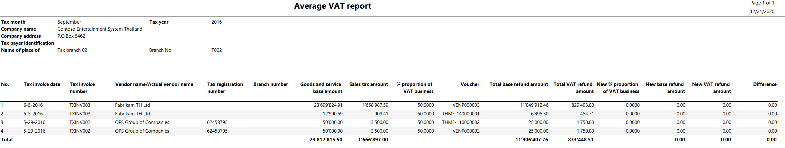
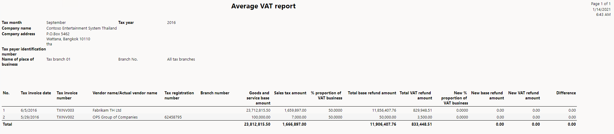
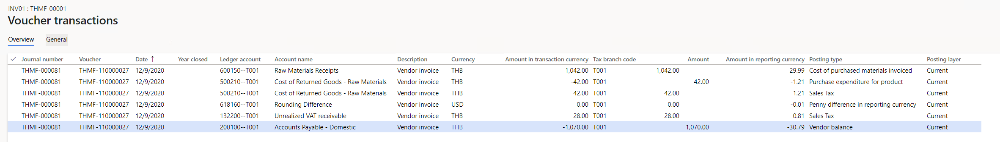
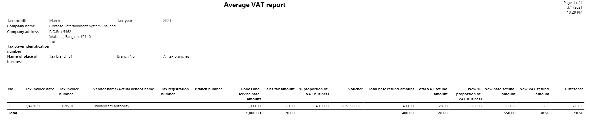

Average VAT for purchase transactions
[!include[banner](../includes/banner.md)]An individual or legal entity might purchase goods or services that are used by both value-added tax (VAT) businesses and non-VAT businesses. In these cases, if there is no clear division of the proportion of the purchase VAT amount between the different businesses, the purchase VAT must be divided based on the actual usage of the purchased goods or services in each business. The average VAT is the percentage of VAT that is divided between the VAT businesses and the non-VAT businesses of a legal entity. Average VAT is applied only to purchase transactions.
You can use multiple tax rates to manage the proportion of VAT between the VAT businesses and the non-VAT businesses of a legal entity. You can manage average VAT for a sales tax code by using the Sales tax code values page.
Set up average VAT
Go to Tax > Setup > Parameters > General ledger parameters > Sales tax, and enable Manage realized and unrealized VAT.
In the Calculation method field, select Total.
Go to Tax > Indirect taxes > Sales tax > Sales tax codes, and set up sales tax codes for average realized VAT.
In the Tax type field, select Average realized.
In the Ledger posting group field, select the ledger posting group for realized VAT.
On the Action Pane, on the Sales tax code tab, in the Sales tax code group, select Values.
On the Sales tax code values page, in the Nondeductible % field, enter the percentage of VAT for the non-VAT businesses.
In the From date and To date fields, define the date interval for the proportion.
Go to Tax > Indirect taxes > Sales tax > Sales tax codes, and set up sales tax codes for average unrealized VAT.
In the Tax type field, select Average unrealized.
In the Ledger posting group field, select the ledger posting group for unrealized VAT.
In the Payment sales tax code field, select the code for average realized VAT.
On the Action Pane, on the Sales tax code tab, in the Sales tax code group, select Values.
On the Sales tax code values page, in the Nondeductible % field, enter the percentage of VAT for the non-VAT businesses.
In the From date and To date fields, define the date interval for the proportion.
For more information, see Thailand unrealized and realized VAT and Set up sales tax codes.
Go to Tax > Indirect taxes > Sales tax > Sales tax groups, and set up sales tax groups for average unrealized VAT and average realized VAT. For example, for average realized VAT, create an item sales tax group that is named AVAT. For average unrealized VAT, create an item sales tax group that is named AUVAT.
Go to Tax > Indirect taxes > Sales tax > Item sales tax groups, and set up item sales tax groups for average unrealized VAT and average realized VAT. For example, for average realized VAT, create an item sales tax group that is named AItem. For average unrealized VAT, create an item sales tax group that is named AServ.
Work with average VAT
You can create the following transactions that have average unrealized and realized VAT:
Purchase order for goods
Purchase order for services
Vendor invoice journal
The amount of VAT for the VAT businesses and the non-VAT businesses is calculated based on the specified VAT ratio. When you post a purchase order, the VAT for the VAT businesses is posted to either the unrealized purchase VAT account or the realized purchase VAT account. The VAT for the non-VAT businesses is posted either to the inventory account for an item as part of the inventory amount or to the expense account for a service as part of the expense.
For more information about unrealized and realized VAT, see Tax invoice for Thailand.
Post a vendor payment transaction when the VAT ratio is updated after the invoice is posted
You must manually calculate the VAT ratio every year. When the VAT ratio is changed, you must update the VAT ratio and the date range. To update the VAT ratio and date range for a sales tax code after the invoice that the sales tax code applies to is posted, use the Sales tax code page.
If realized purchase VAT was posted when you posted the invoice, you can use the updated VAT ratio to make a payment for the vendor transaction on the Journal voucher page. The VAT adjustment is automatically posted for the realized purchase VAT, based on the updated VAT ratio.
If unrealized VAT was posted when you posted the invoice, when you receive the tax invoice from the vendor, you can reverse the unrealized VAT and post the realized VAT by using the Reversal journal page.
For more information, see Reverse the posted unrealized purchase VAT.
If the VAT ratio is updated for an advance payment transaction after you post the invoice, you can manage the average VAT adjustment for the transaction. When you receive the tax invoice from the vendor, determine whether the VAT ratio is updated, reverse the advanced payment, and then make a payment in the current year. The realized or unrealized VAT will automatically be adjusted for the original transaction.
Example
A 7-percent VAT sales tax code is applicable to a purchase transaction of 100.00 Thai baht (THB 100.00). When the invoice is posted, the VAT ratio between the VAT businesses and the non-VAT businesses is 45 percent to 55 percent. However, in the new year, the VAT ratio between the VAT businesses and the non-VAT businesses is updated to 50 percent to 50 percent. Therefore, when the invoice is settled, the VAT ratio between the VAT businesses and the non-VAT businesses is 50 percent to 50 percent.
The VAT is calculated and posted to different accounts, as shown in the following table.
|
VAT calculated and posted when the invoice is posted |
VAT calculated and adjusted when the invoice is settled with updated VAT ratio |
||||||||||||||||||||||||||||||
|
The invoice amount is THB 100.00. The total VAT that is applicable to the invoice is 7 percent, and the calculated VAT amount is THB 7.00.
The following table shows the amounts that are posted to different accounts.
|
A payment of THB 100.00 is made to settle the invoice. The total VAT that is applicable to the invoice is 7 percent, and the calculated VAT amount is THB 7.00.
The following table shows the amounts that are adjusted in different accounts.
|
Generate the Average VAT report
The Average VAT report includes the details of transactions that have average VAT. You must submit the Average VAT report to the Revenue Department of Thailand every month.
Go to Tax > Inquiries and reports > Sales tax reports > Average VAT.
In the Tax month field, select the month to generate the report for.
In the Tax invoice number field, enter the tax invoice number of the invoice that was received from the vendor, if you want the report to include the transactions.
In the Tax invoice date field, enter the date when the tax invoice was generated by the vendor.
In the Tax invoice receipt date field, enter the date when you received the tax invoice from the vendor.
In the Sales tax code field, select the average VAT sales tax code that you want the report to include transactions for.
In the Tax branch field, select the tax branch of the legal entity to generate the report for.
In the Detail level field, select the level of detail that you want the report to include:
Details – Generate a detailed Average VAT report. In this case, each transaction is shown on separate line.
Summary – Generate a summarized Average VAT report. In this case, vendor invoices that have the same tax invoice number are summarized and shown as one line.
Select OK, and review report results.
The following illustration shows an example of a detailed Average VAT report.

The following illustration shows an example of a summarized Average VAT report.

The following table explains the information that is shown on the Average VAT report.
| Field | Description |
|---|---|
| Tax invoice date | The date when the tax invoice was received. |
| Tax invoice number | The tax invoice number of the invoice that was received from the vendor. |
| Vendor name/Actual vendor name | The name of the vendor account. |
| Tax registration number | The number of the vendor account. |
| Branch number | The number of the tax branch that was used during the transaction. |
| Goods and services base amount | The base amount of the transaction. |
| Sales tax amount | The calculated tax amount. |
| % proportion of VAT business | The percentage of VAT that is divided between the VAT businesses and the non-VAT businesses of a legal entity. |
| Voucher | The voucher number in the ledger. |
| Total base refund amount | The base amount for refund. |
| Total VAT refund amount | The calculated VAT amount for refund. |
| New % proportion of VAT business | The percentage of VAT that you've recalculated for the VAT businesses and the non-VAT businesses of a legal entity. |
| New base refund amount | The base amount for refund after you've recalculated the proportion for the VAT businesses and the non-VAT businesses of a legal entity. |
| New VAT refund amount | The calculated VAT amount for refund after you've recalculated the proportion for the VAT businesses and the non-VAT businesses of a legal entity. |
| Difference | The difference between the Total base refund amount value and the New base refund amount value. |
Example
This example shows how to post a purchase order when there is unrealized VAT at the end of the year, but the payment will be held in the new year and will use the new proportion.
Go to Tax > Indirect taxes > Sales tax > Sales tax codes, and set up sales tax codes for average realized VAT.
In the Sales tax code field, enter AVAT.
In the Name field, enter Average realized VAT.
Set the Percentage/Amount field to 7.
In the Tax type field, select Average realized.
In the Ledger posting group field, select the ledger posting group for realized VAT.
On the Action Pane, on the Sales tax code tab, in the Sales tax code group, select Values.
On the Sales tax code values page, enter the following information.
| Sales tax code | From date | To date | Minimum limit | Maximum limit | Value | Nondeductible % | VAT ratio |
|---|---|---|---|---|---|---|---|
| AVAT | 1/1/2020 | 12/31/2020 | 0.00 | 0.00 | 7.00 | 60.00 | 40.00 |
| AVAT | 1/1/2021 | 12/31/2021 | 0.00 | 0.00 | 7.00 | 45.00 | 55.00 |
Set up sales tax codes for average unrealized VAT.
In the Sales tax code field, enter AUVAT.
In the Name field, enter Average unrealized VAT.
Set the Percentage/Amount field to 7.
In the Tax type field, select Average unrealized.
In the Ledger posting group field, select the ledger posting group for realized VAT.
In the Payment sales tax code field, select AVAT.
On the Action Pane, on the Sales tax code tab, in the Sales tax code group, select Values.
On the Sales tax code values page, enter the following information.
| Sales tax code | From date | To date | Minimum limit | Maximum limit | Value | Nondeductible % | VAT ratio |
|---|---|---|---|---|---|---|---|
| AUVAT | 1/1/2020 | 12/31/2020 | 0.00 | 0.00 | 7.00 | 60.00 | 40.00 |
| AUVAT | 1/1/2021 | 12/31/2021 | 0.00 | 0.00 | 7.00 | 45.00 | 55.00 |
Create a purchase order for THB 1,000.00.
In the Sales tax group field, select the sales tax group for average unrealized VAT.
In the Item sales tax group field, select the item sales tax group for average unrealized VAT.
Post an invoice. Enter the following information:
Invoice number: INV01
Invoice date: 12/9/2020
Invoice receipt date: 12/9/2020
The following transactions are created for the voucher:
Base VAT amount: THB 1,000 × 7 percent = THB 70
Nondeductible VAT: THB 70 × 60 percent = THB 42
Deductible VAT: THB 70 × 50 percent = THB 28

Go to Accounts payable > Payments > Vendor payment journal, and settle the transaction.
Go to Accounts payable > Payments > Reversal journal, and reverse the unrealized VAT. Enter the following information:
Tax invoice number: TXINV_01
Tax invoice date: 3/4/2021
Tax invoice receipt date: 3/4/2021
For more information about reversal journals, see Thailand unrealized and realized VAT.
Go to Tax > Inquiries and reports > Sales tax reports > Average VAT.
In the Tax month field, select March 2021, and review the report results:
- Deductible VAT: THB 70 × 55 percent = THB 38.50
The difference between the old nondeductible VAT and the new nondeductible VAT amount is THB 10.50.
